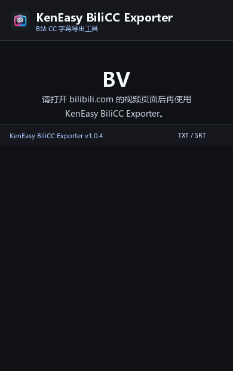
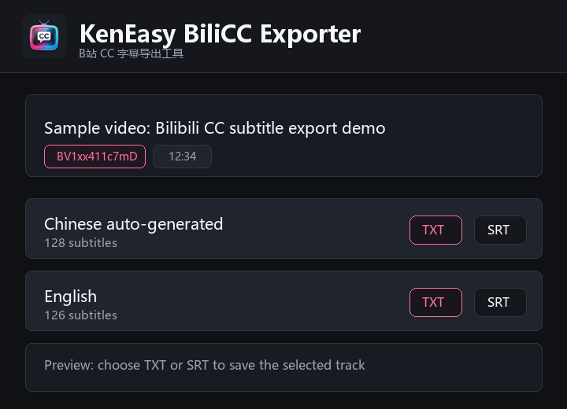
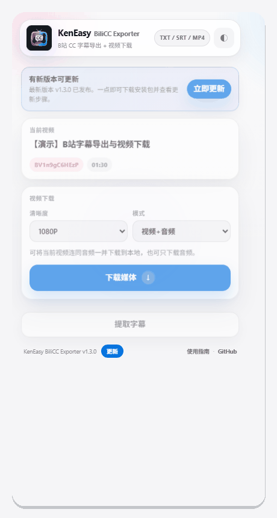

01
打开视频页
在 Chrome 打开带有 BV 号的 Bilibili 视频页面，等待页面加载完成。
KEN EASY · BILICC WORKFLOW
打开视频、提取字幕、选择格式。整个过程保持简单，字幕文件直接保存到你的电脑。


01 · START HERE
不需要复制链接，也不需要手动寻找字幕接口。
在 Chrome 打开带有 BV 号的 Bilibili 视频页面，等待页面加载完成。
点击扩展图标，确认当前视频后点击「提取字幕」，等待轨道读取完成。
在字幕轨道右侧选择 TXT 或 SRT，文件会自动下载到 Chrome 的下载目录。
02 · SCREENSHOTS
下面的截图可以帮助你快速找到每一步。
显示视频标题、BV 号和时长，确认你打开的是正确页面。
中文、英文或其他可用语言会分别显示在这里。
TXT 适合阅读和编辑，SRT 保留时间轴，适合播放器使用。
下载前可以先查看开头内容，避免选错字幕轨道。

03 · INSTALL
GitHub 下载的扩展需要通过开发者模式加载。
下载并解压 KenEasy-BiliCC-Exporter-manual-install.zip。
在 Chrome 地址栏打开 chrome://extensions/。
打开右上角「开发者模式」，点击「加载已解压的扩展程序」。
选择解压后的 chrome-extension 文件夹，然后固定扩展图标。
04 · FAQ
大多数情况都和当前视频的字幕状态有关。
这个视频可能没有 CC 字幕，或者字幕还没有被当前页面加载。可以先刷新视频页，再打开扩展重试。
部分字幕接口只对已登录用户开放。请先在当前 Chrome 浏览器登录 Bilibili，再重新打开扩展。
可以。在弹窗的“视频下载”区域选择清晰度与模式，即可把视频+音频、仅音频或仅视频保存到本机。
TXT 只保留字幕文字，适合阅读和二次编辑；SRT 保留时间轴，适合导入视频播放器或剪辑软件。
默认会保存到 Chrome 的下载目录。如果浏览器启用了“每次下载前询问保存位置”，会出现保存位置选择框。